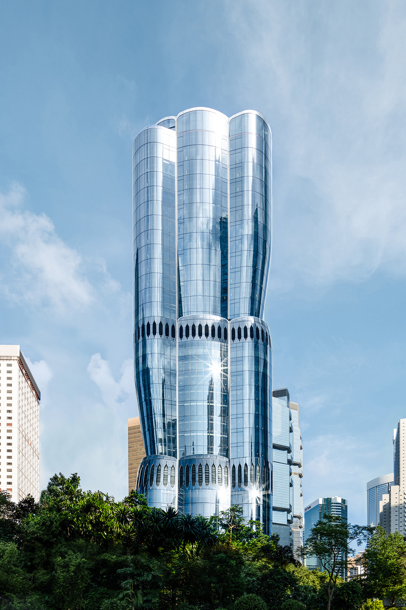
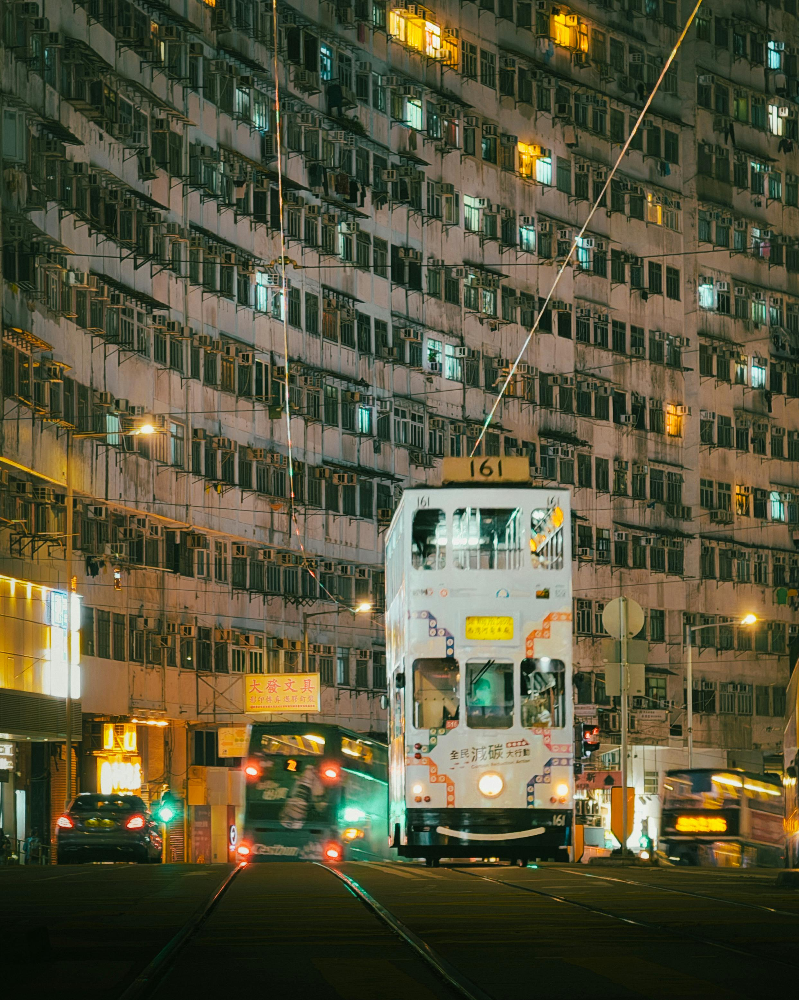

Side Events Calendar
Tue 1/7
Wed 2/7
Thu 3/7
Fri 4/7
18:00
18:30
19:00
19:30
20:00
20:30
21:00
21:30
Victoria Peak at Night
Henderson by Zaha Hadid Arch.

Henderson by Zaha Hadid Arch.Vertical Fluidity & Urban Innovation
Date: July 2 | 20:30 – 22:00
Cost: HKD 250
Victoria Peak at Night
Gala Dinner (+1 ticket)
 Gala Dinner (+1 ticket)
Gala Dinner (+1 ticket)Banquet – Maxim’s Palace
Date: July 4 | 19:30 – 21:00
(No extra cost for registered guest)
Wed 5/7
Sat 6/7
08:00
08:30
09:00
09:30
10:00
10:30
11:00
11:30
12:00
12:30
13:00
13:30
14:00
14:30
15:00
15:30
16:00
16:30
17:00
17:30
18:00
18:30
19:00
19:30
20:00
20:30
21:00
21:30
Discovering Shenzhen
Henderson by Zaha Hadid Arch.
Diamond Hill Crematorium
 Diamond Hill Crematorium
Diamond Hill CrematoriumRemembrance & Architectural Context
Date: July 5 | 09:30 – 11:30
Cost: HKD 250
Wan Chai Temple & Blue House
 Wan Chai Temple & Blue House
Wan Chai Temple & Blue HouseHeritage & Urban Regeneration
Date: July 5 | 09:30 – 11:30
Cost: HKD 250
Mong Kok & Yau Ma Tei
 Mong Kok & Yau Ma Tei
Mong Kok & Yau Ma TeiUrban Density & Cultural Layers
Date: July 5 | 09:30 – 11:30
Cost: HKD 250
Henderson by Zaha Hadid Arch.
Public Housing Typologies
 Public Housing Typologies
Public Housing TypologiesHigh-Density Residential Design
Date: July 5 | 13:30 – 15:30
Cost: HKD 250
Mong Kok & Yau Ma Tei
Mong Kok & Yau Ma TeiUrban Density & Cultural Layers
Date: July 5 | 13:30 – 15:30
Cost: HKD 250
Diamond Hill Crematorium
Diamond Hill CrematoriumDesigning for Remembrance in a City of Density
Date: July 5 | 13:30 – 15:30
Cost: HKD 250
M+ Art Museum
 M+ Art Museum by Herzog & de Meuron
M+ Art Museum by Herzog & de MeuronInside the Making of a Cultural Landmark
Date: July 5 | 14:30 – 16:30
Cost: HKD 250
Henderson by Zaha Hadid Arch.
M+ Art Museum
M+ Art Museum by Herzog & de MeuronInside the Making of a Cultural Landmark
Date: July 5 | 16:30 – 18:30
Cost: HKD 250
Public Housing Typologies
Public Housing TypologiesHigh-Density Residential Design
Date: July 5 | 16:30 – 18:30
Cost: HKD 250
Wan Chai Temple & Blue House
Wan Chai Temple & Blue HouseHeritage & Urban Regeneration
Date: July 5 | 16:30 – 18:30
Cost: HKD 250
Tram Tour (East → West)

Tram TourA moving portrait of Hong Kong’s architecture.
Date: July 5 |19:30 – 20:30
Cost: HKD 150
Tram Tour (West → East)
Junk Boat in Sai Kung
 Junk Boat in Sai Kung
Junk Boat in Sai KungA scenic escape to Hong Kong’s back-garden.
Date: July 6 | 08:30 – 19:30
Cost: HKD 960